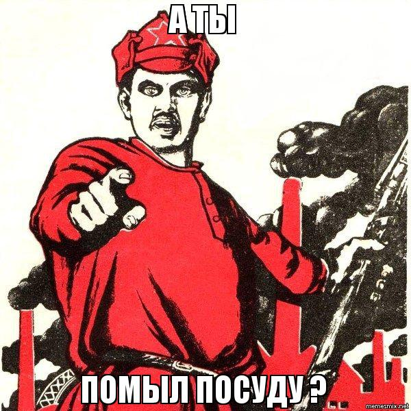

-- Вам не скучно было ехать так долго в поезде?
ei ollut, koska luin mielenkiintoista kirjaa
-- Вы можете вернуть мне книгу?
Kyllä, olen jo lukenut sen
-- Олег уехал?
Kyllä, me saatoimme hänet eilen matkaan.
-- Где вы вчера задержались?
Olimme saattamassa Olegia, hän lähti eilen.
-- Твой доклад готов?
On kyllä, olen kirjoittanut sen.
-- Почему ты не был вчера на стадионе?
Kirjoitin esitelmää.
